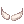

Cursed Spirit Quest
Jump to navigation
Jump to search
| Requirements | |
|---|---|
| Base Level: | 60 |
| Starting Point: | Bio Labs |
| Items: | 1  Handcuffs Handcuffs1  Glass Bead Glass Bead1 Bouquet 5  Holy Waters Holy Waters Grampa Beard  Geek Glasses Geek Glasses
|
| Rewards | |
| Experience: | - |
| Items: | 1  Old Blue Box Old Blue Box10 Speed Potions |
| Others: | Access to Dangerous Rumors. |
- Talk to the Warper > Dungeon > Bio Labs.
- While equipping Handcuffs, go to one of the locations found on the map below (/navi lhz_dun01 225/198). You will receive a new quest The Enterprise (if you've already done this part, you will get cursed instead).
- Go to Lighthalzen (@go 20) and move to the slum area (
/navi lighthalzen 265/200). Keep speaking to the NPC until he moves you to the other side. - Find and go to the following locations (only one player can speak with the hidden NPC at a time), a popup will appear:
/navi lighthalzen 344/278/navi lhz_in03 178/22/navi lighthalzen 295/227/navi lighthalzen 364/315
- Speak with the Elder (
/navi lighthalzen 346/263) while having Handcuffs in your inventory and select Um, burden...?.
- Enter the Rekenber Headquarters (
/navi lighthalzen 103/244) by going to the top left building in Lighthalzen. - Move up until a dialogue pops up (
/navi lhz_in01 113/150). - Talk with the Representative up ahead (
/navi lhz_in01 114/181) and ask her about the Corporation History. - Head towards the Library (
/navi lhz_in01 27/247).- Talk to the Representative twice, asking about both corporation history and Rekenber's businesses.
- Then click on the Rekenber Guidebook nearby.
- Find another spirit at
/navi lhz_in01 272/227, on the second floor.- This step must be done after step 9.
- Go back and speak with the Rekenber Guard at
/navi lhz_in01 35/226. You'll have to wear the Grampa Beard and the Geek Glasses.
Those items can be bought from the Lighthalzen shop (/navi lighthalzen 201/162). Speak with the Toy Supplier on the upper area at (/navi lhz_in02 87/208). - Once you're inside, enter the portal on the right and move right more (
/navi lhz_in01 206/129). You will trigger a dialogue and be warped in a different room. Once inside, speak with either NPC to trigger a dialogue. You'll then be warped back to the lab.- If you cannot trigger the warp to the room, repeat step 10.
- Move out of the room by going in the left portal and then go in the south portal. Speak with the Mad Scientist.
- Select Do you need any help?
- Speak with him again and select Let me speak with you.
- Speak with him a third time (you will need a Glass Bead) and select Why do you want Glass Beads? > Ask about work > What kind of research? > Um, what are you testing on?
- Leave the room and go to the portal north (
/navi lhz_in01 282/166), you will be warped to another map. - Speak with the NPC in the room and it will trigger a dialogue. You will get an Old Pendant.
- Go back to Lighthalzen and speak with the Elder again (
/navi lighthalzen 346/263). After showing him the Old Pendant, he will ask you to bring him the following items:- 5 Holy Waters
- 1 Bouquet
- 5
- Speak to the Elder again once you've brought the items he asked for.
- Walk north and enter the house at (
/navi lighthalzen 319/321). Speak with the Crippled Girl (/navi lhz_in03 32/162) and watch out for your answers! You will need to do extra steps if you choose the wrong option.
Select Show her the Pendant. > Break it to her gently > Distract her.
If you used the wrong option and got warped out, keep going back until you're allowed to go back in and speak with the Crippled Girl again. - Walk out of the room (don't use @go) and it will trigger a dialogue.
- Go back to Rekenber Headquarters (@go 20,
/navi lhz_in01 286/226) and talk to Secretary Slierre.- Ask About the Slums.
- Talk to her again and ask About the Laboratory.
- Speak with her for a third time and select Wolfchev's Research > I'm a friend of his > W-Wait! > About Wolfchev's Research > Wolfchev's Test Subjects > His experiments are suspicious... > Show Evidence > What's Regenschirm up to? > Yes
- Keep talking to her until she rewards you with an Old Blue Box and 10 Speed Potions.
- You have completed the quest! You can now begin Dangerous Rumors.